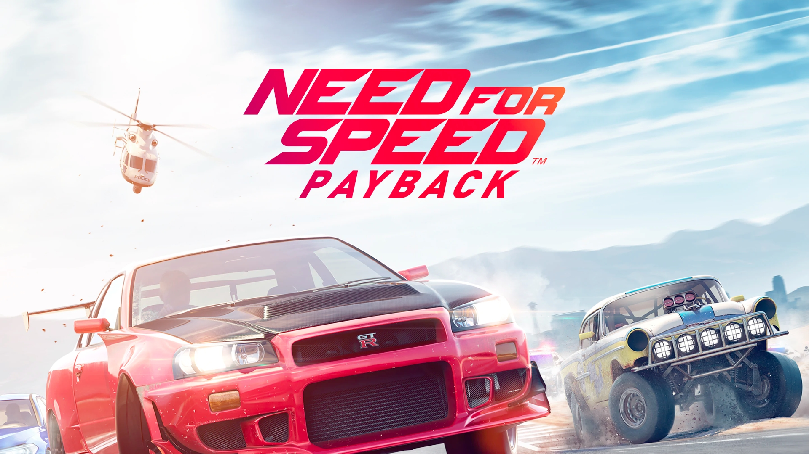
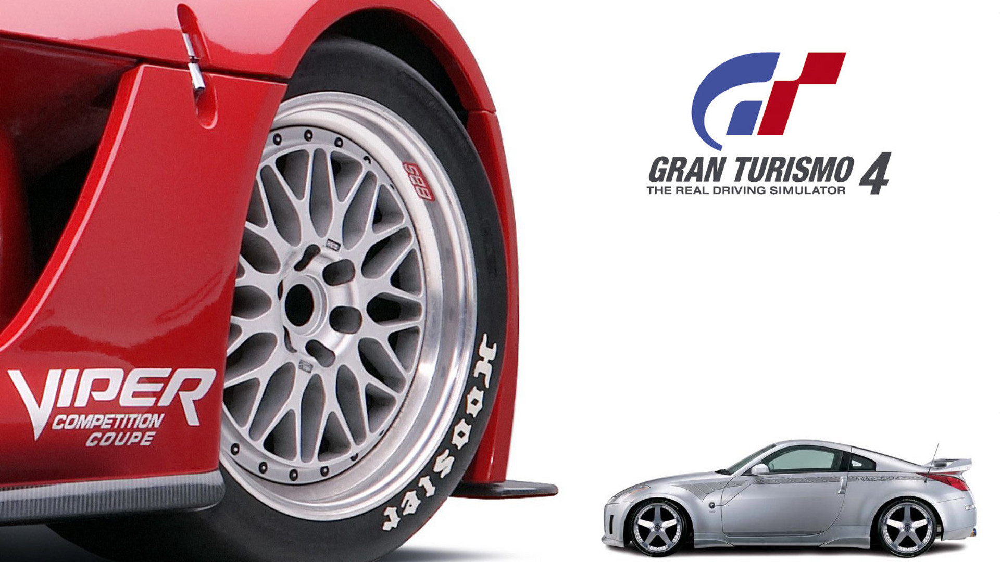

Forza Horizon 5
Forza Horizon 5 é um jogo de corrida em mundo aberto ambientado no México, com gráficos impressionantes, clima dinâmico e uma vasta seleção de carros. Oferece uma experiência imersiva, com desafios variados e modos solo e multiplayer

Need for Speed PayBack
Need for Speed Payback é um jogo de corrida de mundo aberto com uma história de vingança, personalização de carros e perseguições policiais intensas

Gran Turismo 4
Gran Turismo 4 (2004) é um simulador de corrida para PS2, com mais de 700 carros e 50 pistas. Destaca-se pelo modo carreira, personalização de veículos e o inovador modo B-Spec, onde o jogador gerencia corridas. Com gráficos avançados e física realista, é um dos maiores sucessos da franquia